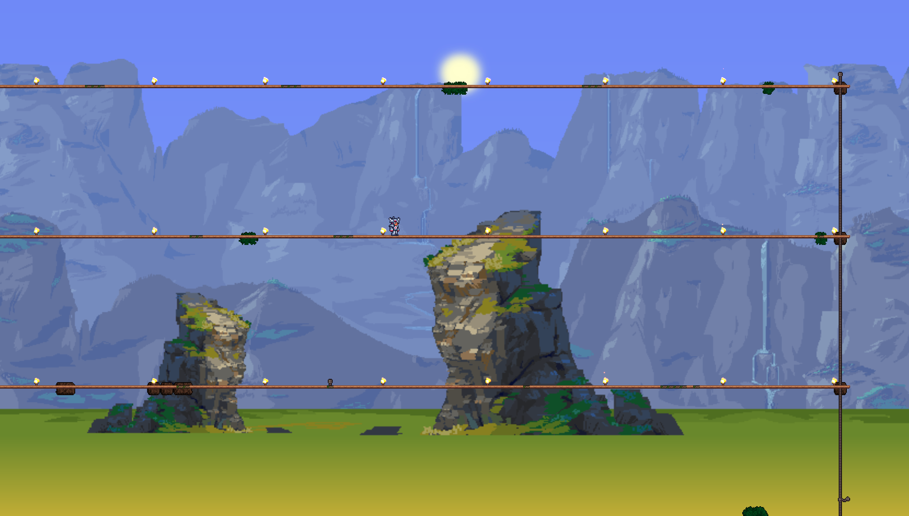

The farther you get, the stronger you'll get too!
Part Seven: Queen Slime Ranger | ||||
|---|---|---|---|---|
| Boss Prep... Again... | Take to the Sky | Boss Fight #5 | ||
|  You don't need to do much prep for this, all I'd reccomend doing is setting up an arena like the one you did before, only this time do it in the new Hallow Biome. |
This is part of your prep, but next id reccomend getting Wings.. This will help you drastically in this next fight, so take it as you will. |
Your next fight is against the Queen Slime. This is a very easy fight, but it can be a bit tricky if you don't know what to do. The Queen Slime will spawn a lot of smaller projectiles and slimes, which is partially why the wings will be helpful. |
||
Notable Items |
|||||
|---|---|---|---|---|---|
None |
|||||
Crafting |
|||||
None |
|||||
Notable Items [Expert/Master Mode] |
|---|
Expert Drop |
 |
Notable NPCs |
|---|
None |
Notable Bosses |
|
|---|---|
|
|